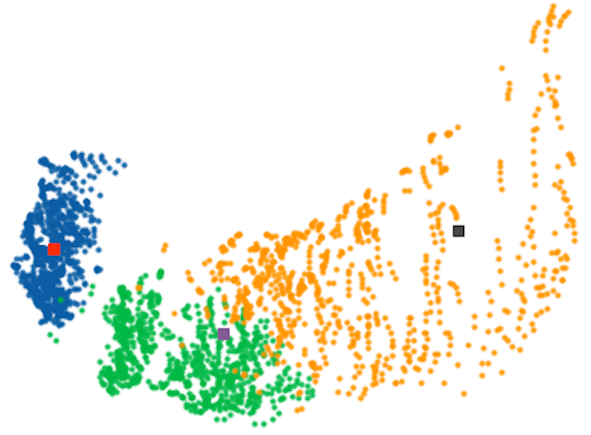

Selecting a subset of images or shapes that accurately represents the entire set is often a challenging problem.
We propose a distance-based clustering method to identify a reference set that effectively captures the characteristics of the whole class with fewer shapes.
This method offers versatile applications, including clone removal, improved visualization, and data compression.
We apply optimal transport techniques to map shapes into a feature space and use constrained K-means algorithms to identify the most central images.